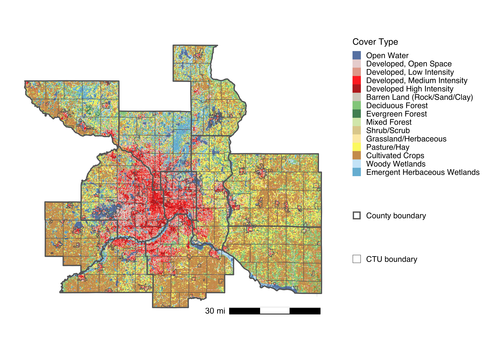

17 Natural Systems
17.1 Introduction
Natural systems are a critical component of capturing carbon from the atmosphere and sequestering it in biomass and terrestrial soils. Photosynthesis is the central mechanism of this process and vegetation is therefore the focal land cover classification for quantifying the potential for regions to both sequester and store carbon. Different ecosystems have varying capacities for carbon capture and this work focuses on five broad classifications: urban trees, urban grasslands (i.e. turf grass, lawns), forests, natural grasslands, and wetlands. The distinction between tree and grassland cover in developed areas (i.e. urban) is important as despite having similar sequestration rates, urban natural systems are generally understood to have smaller storage capacities. The preservation and restoration of natural systems will be a key tool in reducing atmospheric greenhouse gases.
17.2 Methods
The approach for calculating carbon sequestration potential for a given geography, \(j\), is,
\[\text{Sequestration}_j = \Sigma (\text{area}_i \times {\text{Sequestration Rate}_i}) \]
where \(i\) is land cover classification. The sequestration rate is based on Midwest specific sequestration rate estimates found in the primary scientific literature (?tbl-sequestration).
17.2.1 Land cover classification
Land cover was determined by using two products from the USGS’s National Land Cover Dataset (NLCD), each at a 30 m resolution: (1) land cover type and (2) percent tree canopy cover. First, we used the land cover map to identify the region’s various natural cover types (e.g. forests, wetlands, grasslands) that fell outside of ‘Developed’ lands. In order to classify green spaces that are co-located within the urban sector (e.g. urban trees and grasslands), we overlaid the tree canopy cover map on the land cover map. When tree canopy was present in any areas classified as ‘Developed’, we re-classified these as ‘Urban_Tree’ and corrected the area covered based on the percent tree canopy value from the NLCD tree layer. When an area is classified as ‘Developed, Open Space’ but contains zero tree canopy coverage, we re-classified this as ‘Urban_Grassland’. Using this method, we developed the following land cover classifications: ‘Urban_Tree’, ‘Urban_Grassland’, ‘Tree’, ‘Grassland’, and ‘Wetland’.

17.3 Results
There is considerable variation across counties in two key components that affect natural system carbon sequestration and stock potential: total area of green spaces and the ratio of ‘natural’ to ‘urban’ green spaces. For example, Chisago County features a higher proportion of green spaces in undeveloped lands compared to Hennepin County, and consequently has nearly 40% greater stock potential than Hennepin County owing to the former’s higher stock capacity in wetlands and forests. Despite this discrepencancy, Hennepin and Chisago Counties have nearly identical sequestration rates due to Hennepin County’s high proportion of urban trees and turf grass (urban grasslands) which have high potential for rapid carbon sequestration. This dichotomy illustrates that different counties curation of natural spaces may play different roles. Highly developed areas may help offset carbon emissions by providing rapid sequestration sinks in urban greenery, whereas less developed counties can provide longer term carbon sinks in natural areas with a higher capacity to continue drawing down atmospheric carbon even if future emissions approach net zero. The high stock capacity also reinforces the need for natural systems protection, as currently captured carbon would be released into the atmosphere upon development.
Two important caveats to these results are that (1) carbon sequestration tends to slow as natural systems mature and (2) present day natural systems exist at some intermediate level of the illustrated carbon stock potential. The former means that these approximations could be higher or lower depending on the average age of natural systems in each county (e.g. time since agricultural abandonment). The latter means that the loss of these natural systems to development or habitat instruction means that not only would the region lose carbon sinks, but a substantial amount of the stored carbon will be transferred to the atmosphere, increasing atmospheric greenhouse gases.
17.3.1 Correlation with county area
The expectation is that larger counties have higher carbon sequestration and storage capacities due to more acreage for green spaces; this is indeed observed.
17.3.2 Regional parks
Parks play an important role in climate change resilience by protecting existing natural systems and acquiring lands for natural system restoration. The regional park system of the seven county Twin Cities region provides an excellent example of this. The following graphs show how regional parks, on a per area basis, are more efficient carbon sinks than the counties they reside in. For both sequestration and stock potential, this is in large part due to a much small proportion of non-green spaces (e.g.. impervious surfaces, agricultural lands), but stock potential in particular has a higher capacity due to a larger proportion of natural green spaces as opposed to urban green spaces. Regional parks represent 4.0% of the total land area of the seven county region, but 5.6% of its carbon sequestration potential and 6.6% of its carbon stock potential.